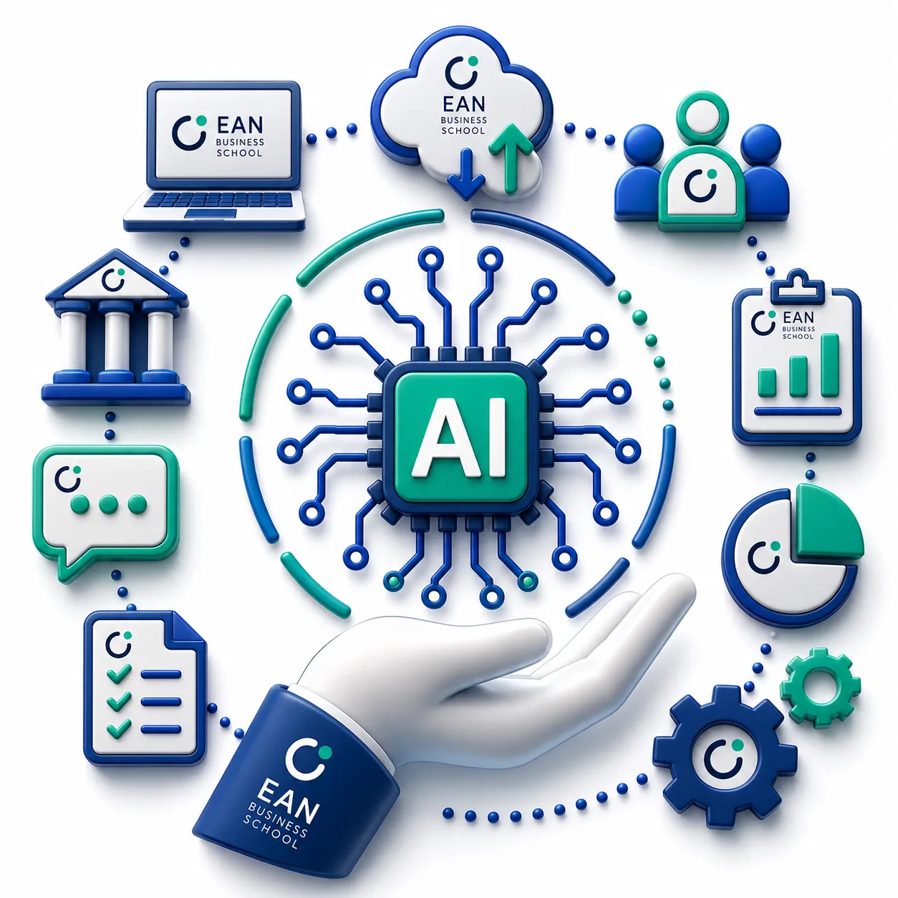

Agenda del módulo
¿Qué incluye este módulo?
Conoce las técnicas, herramientas de Inteligencia Artificial y
aplicaciones prácticas que utilizarás para crear contenidos
profesionales y optimizar el trabajo diario del Community Manager.
-
✓
IA como asistente creativo del Community Manager
-
✓
Prompting para creación de contenidos
-
✓
Investigación e ideación de contenidos con IA
-
✓
Hooks, titulares y conceptos creativos
-
✓
Copywriting para redes sociales
-
✓
Posts, carruseles y stories
-
✓
Reels y video corto
-
✓
Generación y edición de imágenes con IA
-
✓
Adaptación de contenidos para diferentes plataformas
-
✓
Flujo profesional de producción de contenidos con IA

Herramientas de IA
-
ChatGPT
→ Ideación, investigación, copywriting, generación de
contenidos, prompts y adaptación de textos.
-
Claude
→ Desarrollo de ideas, análisis y creación de contenidos con
diferentes enfoques.
-
Canva Magic Studio
→ Diseño y producción de piezas visuales para redes sociales
utilizando herramientas de Inteligencia Artificial.
-
Adobe Firefly
→ Generación y edición de imágenes para crear recursos visuales
originales.
-
CapCut AI
→ Creación y edición de videos cortos, subtítulos y recursos
audiovisuales con Inteligencia Artificial.
Crear un banco de contenidos para una marca utilizando
Inteligencia Artificial para generar ideas, hooks, copies,
llamados a la acción, guiones y piezas adaptadas a diferentes
formatos y plataformas.